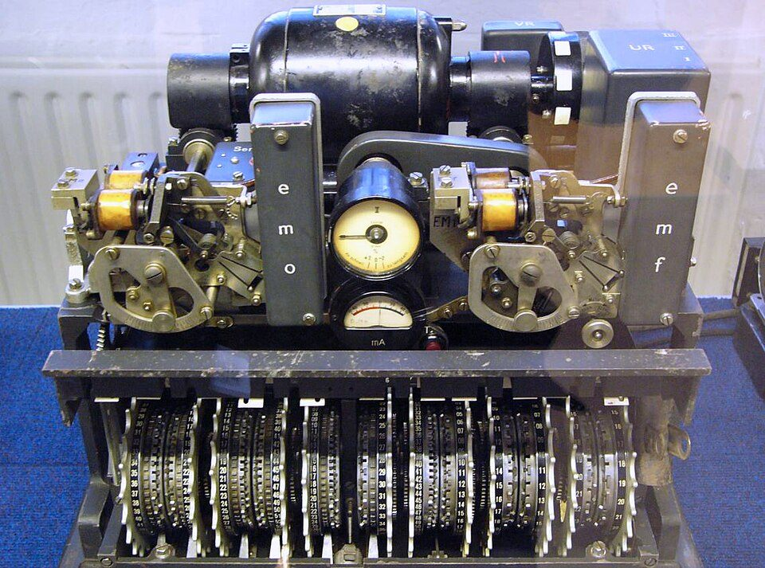
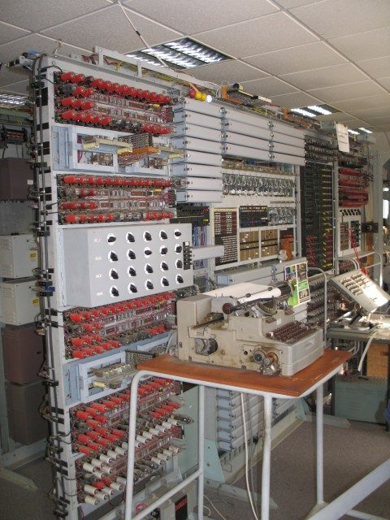

V roce 1917 přišel Gilbert Vernam s nápadem šifrovat přímo na dálnopisu: bity zprávy se sečtou s bity klíčové děrné pásky a výsledek jde rovnou na linku. Záložka Vernamova šifra to ukazuje na třech páskách. Záložka Princip XOR vysvětluje, proč šifra funguje a kdy ji nelze prolomit. Poslední záložka je o Lorenzově šifrovací přístavbě, která stejný princip použila ve druhé světové válce, a o počítači Colossus, který ji pomáhal prolamovat.
Dálnopis zná jen velká písmena bez diakritiky, číslice a několik znaků. Zpráva se převede do 5bitového kódu ITA2 (viz aplikace Dálnopis), včetně přepínacích znaků LTR a FIG. Klíčová páska musí být stejně dlouhá jako zpráva.
Ve sloupci platí: díra a díra dá bez díry, díra a bez díry dá díru, bez díry a bez díry dá bez díry. Šifrový text je tedy tam, kde se otevřený text a klíč liší. Najeďte na sloupec a uvidíte výpočet. Kliknutím na otvor na šifrové pásce překlopíte bit, jako by se při přenosu poškodil.
—
Po lince putuje jen šifrový text. Bez klíče z něj odposlouchávající nic nepozná.
Gilbert Vernam z firmy AT&T vyvinul šifrování bitovým sčítáním klíčové pásky v roce 1917, patent mu byl udělen v roce 1919. Jeho klíčová páska byla slepená do smyčky, a tak se klíč opakoval. Až Joseph Mauborgne z americké armády si všiml, že zcela náhodný klíč, který se nikdy neopakuje a použije se jen jednou, dělá šifru neprolomitelnou. Princip si můžete vyzkoušet v záložce Princip XOR.
XOR (výlučné nebo, někdy značené ⊕) je operace nad dvěma bity. Výsledek je 1, když se bity liší, a 0, když jsou stejné. Stejnou operaci provádí Vernamova šifra pro každý bit zprávy.
| text | klíč | šifra |
|---|
Je to sčítání po jednotlivých bitech bez přenosu do vyššího řádu, tedy součet modulo 2. Proto 1 + 1 = 0.
Klikáním na kolečka přepínáte bity textu a klíče. Šifrový bit je černý právě tehdy, když je černé jen jedno z nich.
Písmeno má v kódu ITA2 pět bitů, takže se XOR provede pětkrát vedle sebe. Vyberte písmeno zprávy a písmeno klíče.
Šifrový text je často řídicí znak nebo jiné písmeno. Stejným klíčem se šifrový text zase převede na původní písmeno, protože A ⊕ K ⊕ K = A. Dvakrát použitý XOR se vyruší.
Napište krátké slovo z písmen. Aplikace ho zašifruje náhodným klíčem. Pak zkuste hádat, co v šifrovém textu je.
Co když operátor omylem zašifruje dvě zprávy stejným klíčem? Takové dvojici se říkalo hloubka. Šifrové texty se pak dají sečíst a klíč zmizí: C₁ ⊕ C₂ = (T₁ ⊕ K) ⊕ (T₂ ⊕ K) = T₁ ⊕ T₂.
Lorenzova přístavba SZ40/42 byla šifrovací zařízení, které se připojilo k dálnopisu. Pracovalo na stejném principu jako Vernamova šifra, jen klíčovou pásku nahradilo dvanáct otáčejících se kol. Britové jí říkali Tunny (tuňák) a celé rodině německých dálnopisných šifer Fish (ryba).
PLUS značí obsah nad rámec učiva gymnázia. Tato záložka je určena zájemcům o historii kryptologie a informatiky.
Operátor psal na klávesnici dálnopisu otevřený text, který se kódoval do ITA2. Přístavba k němu bit po bitu přičetla klíč a šifrový text šel přímo do vysílače. Přijímací stroj se stejným nastavením kol odstranil klíč a vytiskl otevřený text. Nikdo z operátorů šifru nikdy neviděl, a proto jí stačil jediný operátor, na rozdíl od Enigmy, kde se opisovalo písmeno po písmenu.
Klíč se v každém kroku skládal ze dvou částí:
Šifrový text je T ⊕ χ ⊕ ψ. Počet možných nastavení všech dvanácti kol je zhruba 1,6 · 10¹⁹.
| Enigma | Lorenz SZ40/42 | |
|---|---|---|
| Co šifruje | písmena (26) | 5bitové znaky ITA2 |
| Provoz | 3 lidé (psal, opisoval, vysílal Morseovkou) | 1 operátor, šifra jde rovnou do rádia |
| Princip | točivé rotory a záměna písmen | XOR s klíčem z kol, jako Vernamova šifra |
| Použití | různé druhy zpráv | jen zprávy nejvyššího vedení |
| Útok | Bombe (Turing) | Colossus (Flowers, Newman) |

Zjednodušený model: vzory kolíků jsou jen ukázkové, skutečné bylo tajné a měnilo se. U každého kola je nahoře čtecí hlava, která čte právě svítící kolík (černě = 1, světle = 0). Zprávu zašifrujete po jednom znaku nebo celou najednou.
Kola χ (otáčejí se po každém znaku)
Kola ψ (otáčejí se jen někdy) a motorová kola μ
Pravidlo otáčení: kolo μ61 se otočí v každém kroku. Kolo μ37 se otočí jen tehdy, když μ61 ukazuje 1. Kola ψ se otočí jen tehdy, když μ37 ukazuje 1. Kola χ se otáčejí vždy. Z toho vyplývá, že klíč se po části znaků mění jen vlivem χ kol, a to Britům pomohlo.
Skupina britských policistů zachytila první zprávu šifrovaného dálnopisného provozu nového typu.
Z Athén se vysílala zpráva o čtyřech tisících znacích. Příjemce požádal o opakování a odesílatel poslal tutéž zprávu se stejným nastavením kol, jen s drobnými změnami a zkratkami. Dvě šifry stejným klíčem jsou přesně hloubka, o které je řeč v záložce Princip XOR.
John Tiltman rozpoznal, že jde o Vernamovu šifru. Ručně obě zprávy rozluštil a obnovil celý klíč, tedy asi čtyři tisíce bitových pětic.
Bill Tutte z Tiltmanova klíče odvodil, jak stroj klíč tvoří: v klíči našel opakování po 41 znacích, a tím se dostal ke stavbě χ kol. Do ledna 1942 se s kolegy podařilo odhalit logickou stavbu celé přístavby, aniž by ji měli před sebou. Britové postavili stroj podle jeho popisu.
Od léta 1942 se zprávy luštily ručně v oddělení Testery, které vedl major Ralph Tester. Bylo to zdlouhavé a rostl počet zpráv.
Max Newman navrhl stroj, který by hledal nastavení kol automaticky. První, Heath Robinson, zprovoznili v červnu 1943. Používal dvě papírové pásky, které se musely přesně synchronizovat, a proto byl pomalý a poruchový.
Tommy Flowers, inženýr britské pošty, navrhl, že dvě synchronizované pásky nahradí elektronkami: šifrový text se čte z jedné smyčkové pásky a vzor kol se vytváří elektronicky. První Colossus Flowers postavil v pošťáckém výzkumném ústavu Dollis Hill a 8. prosince 1943 tam úspěšně prošel zkouškou.
Nešlo o počítač, jak ho známe dnes. Colossus četl smyčku šifrovaného textu rychlostí 5 000 znaků za sekundu, v elektronkách vytvářel možné nastavení χ kol a počítal, kolikrát souhlasí s odposlechnutou zprávou. Nastavení, při kterém počet shod vyskočil nad náhodnou hodnotu, bylo to správné. Zbytek se pak dopočítal ručně. Programoval se přepínači a propojovacím polem, ne uloženým programem.

Britové osm z deseti strojů po válce rozebrali, údajně ze strachu, že by se o nich dozvěděli Sověti. Zbylé dva se rozebraly v šedesátých letech. Tommy Flowers dostal rozkaz spálit dokumentaci. Existence Colossu se veřejně přiznala až v polovině sedmdesátých let a úplná zpráva o prolomení šifry Tunny se zveřejnila v roce 2000. Funkční repliku Colossu Mark 2 postavil tým vedený Tonym Salem, v Národním muzeu výpočetní techniky v Bletchley Parku je vystavena.
Gilbert Vernam šifruje na dálnopisu bitovým sčítáním s klíčovou páskou.
Firma Lorenz vyrábí šifrovací přístavbu pro německé vrchní velení. První zkušební provoz byl v červnu 1941.
Chyba operátora dává Britům dvě zprávy stejným klíčem.
Zdokonalená verze, od poloviny roku 1942 v hojném provozu. Pozdější verze SZ42A (únor 1943) a SZ42B (červen 1944) přidaly další omezení.
První automatický prolamovací stroj.
V Dollis Hill uspěl při zkoušce. Do Bletchley Parku se dodal 18. ledna 1944.
Colossus poprvé zaútočil na skutečnou zprávu.
První Mark 2 začíná pracovat v osm hodin ráno, pět dnů před vylodněním v Normandii.
V Bletchley Parku pracuje deset Colossů, jedenáctý se montuje.
Osm strojů je rozebráno, zbylé dva v šedesátých letech. Dokumentace je spálena.
Britská vláda poprvé připouští existenci Colossu.
Britská vláda zveřejňuje 500stránkovou zprávu z roku 1945 o prolomení šifry.
Tým Tonyho Saleho staví funkční Colossus Mark 2 v Bletchley Parku.
Údaje podle Britské encyklopedie, Národního muzea výpočetní techniky (TNMOC), Stanfordské univerzity a Wikipedie. U některých dat (příchod Colossu Mark 1 do Bletchley Parku, první nasazení) se zdroje liší o měsíc.